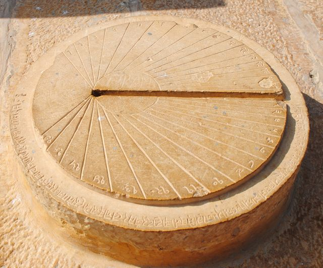

Sundial Eccentricity as a Function of Latitude
First lets look at our example:

Diameter across major axis = 2x major axis = $2 a = 495$ (measured in the picture).
So major axis would be $a = 247.5$.
Oppoosite focus to major axis = c + a = 374.1 measured.
focus to center mark = c = 126 measured.
so major axis = a = 374.1 - 126 = 248.1
seems to agree with half of major diameter.
average of the two: a = (247.5 + 248.1) / 2 = 247.8
finding eccentricity based on this: e = c / a = 126 / 247.8 = 0.50847457627119.
Using this to reverse-engineer the minor axis: $e = \sqrt{1 - \frac{b^2}{a^2}}$ means $b = \sqrt{a^2 (1 - e^2)} = \sqrt{a^2 - c^2}$. So this means $c^2 = a^2 - b^2$.
So we get $b = 213.37488137079$.
Here's me failing to inverse-transform the perspective transform out of the picture
ok I tried to perspective-transform the pic to get the minor axis up and down from the center to be equal,
i.e. make it a directly ontop down pic of the ellipse so no perspective distortion at all.
This gave me a ratio of b = 122 minor axis and a = 198 major axis and a focus of c = 100.
So $e = c / a = 100 / 198 = 0.50505050505051.$
And $e = \sqrt{1 - \frac{b^2}{a^2}} = 0.78761974503507$ is wildly off the last two calculated eccentricities, so maybe my perpsective-undo wasn't so accurate.
The take-away lesson is this: trying to use photoshop to inverse-transform can still sneak in unphysical scale effects.
Alright so two of our three eccentricities were about $e = 0.5072$, so what latitude sundial ellipse does that correspond with?
Ok so how to calculate the latitude based on the eccentricity of a sundial ellipse.
Spherical coordinates:
$\vec{P}(\vec{x})
= \vec{P}(r, \theta, \phi)
= \left[ \begin{matrix} x(r, \theta, \phi) \\ y(r, \theta, \phi) \\ z(r, \theta, \phi) \end{matrix} \right]
= \left[ \begin{matrix} r cos(\phi) sin(\theta) \\ r sin(\phi) sin(\theta) \\ r cos (\theta) \end{matrix} \right]
$.
$\theta = $ is linear with respect to the latitude of the Earth. While the latitude has 0 at the equator, spherical coordiante $\theta$ has 0 at the north pole.
$\phi = $ the angle around the earth. This is longitude, no need to adjust. If you want to account for Earth rotation, just substitue $\phi = \phi_0 + \omega t$ for $\omega =$ angular velocity and $t =$ time.
Lets say our sun orbits us at a revolution axis angle of $\alpha$ from the z axis towards the x axis,
so $\vec{n} = \left[ \begin{matrix} sin(\alpha) \\ 0 \\ cos(\alpha) \end{matrix} \right]$
Now we want to find the space perpendicular to this, for our orbit of our sun:
$\vec{v} = \left[ \begin{matrix} v_x \\ v_y \\ v_z \end{matrix} \right]$
Such that $\vec{v} \cdot \vec{n} = v_x sin(\alpha) + v_z cos(\alpha) = 0$.
Therefore $v_z = -v_x tan(\alpha)$.
Substitute:
$\vec{v} = \left[ \begin{matrix} v_x \\ v_y \\ -v_x tan(\alpha) \end{matrix} \right]$
Now lets look at the unit vectors:
$|\vec{v}| = v_x^2 + v_y^2 + v_x^2 tan(\alpha)^2 = 1$
$v_x^2 cos(\alpha)^2 + v_y^2 cos(\alpha)^2 + v_x^2 sin(\alpha)^2 = cos(\alpha)^2$
$v_x^2 + v_y^2 cos(\alpha)^2 = cos(\alpha)^2$
$v_x^2 / cos(\alpha)^2 + v_y^2 = 1$
Let $t = v_x / cos(\alpha)$
$t^2 + v_y^2 = 1$
Now we can parameterize these two by a rotation: let $t = cos(\beta)$ and $v_y = sin(\beta)$:
Then $v_x = cos(\alpha) t = cos(\alpha) cos(\beta)$
And our vector becomes:
$\vec{v} = \left[ \begin{matrix}
cos(\alpha) cos(\beta) \\
sin(\beta) \\
-sin(\alpha) cos(\beta)
\end{matrix} \right]$
So when our tilt angle $\alpha = 0$ and our revolution angle $\beta = 0$ we see $\vec{v} = \hat{x}$ points along the x-axis.
So $\vec{v}$ points from the sun to the Earth, in an Earth-relative coordinate system.
Let's consider the Earth to have a radius R.
I could consider the sun's distance as well, and trace lines from the Sun center, but instead I will just assume the sun is so far away that light rays can be treated like straight lines.
Now let's look at a line segment, starting on the sphere surface of $r = R$, sticking up by a distance of $\delta$:
$\vec{P}_\delta = \vec{P}(R + \delta, \theta, \phi)
= \left[ \begin{matrix}
(R+\delta) cos(\phi) sin(\theta) \\
(R+\delta) sin(\phi) sin(\theta) \\
(R+\delta) cos(\theta)
\end{matrix} \right]$
Now let's draw a line from this along the sun vector, and parameterize this by some parameter $s$:
$\vec{P}_{ray} = \vec{P}_\delta + \vec{v} \cdot s$.
Now if we solve for when this ray's magnitude is $R$, we can find where it intersects the sphere, if at all.
$|\vec{P}_{ray}| = R$
$|\vec{P}_\delta + \vec{v} \cdot s| = R$
$(\vec{P}_\delta + \vec{v} \cdot s) \cdot (\vec{P}_\delta + \vec{v} \cdot s) = R^2$
$|\vec{P}_\delta|^2 + 2 (\vec{P}_\delta \cdot \vec{v}) s + |\vec{v}|^2 cdot s^2 = R^2$
using $|\vec{v}| = 1$ and using $|\vec{P}_\delta| = R + \delta$:
$(R + \delta)^2 + 2 (\vec{P}_\delta \cdot \vec{v}) s + s^2 = R^2$
$2 R \delta + \delta^2 + 2 (\vec{P}_\delta \cdot \vec{v}) s + s^2 = 0$
Now if we want we can solve this for $s$:
$s = \frac{1}{2} (-2 (\vec{P}_\delta \cdot \vec{v}) \pm \sqrt{(2 (\vec{P}_\delta \cdot \vec{v}))^2 - 4 (2 R \delta + \delta^2)} )$
$s = -(\vec{P}_\delta \cdot \vec{v}) \pm \sqrt{(\vec{P}_\delta \cdot \vec{v})^2 - (2 R \delta + \delta^2)}$
and for entertainment, solve for $\vec{P}_\delta \cdot \vec{v}$:
$\vec{P}_\delta \cdot \vec{v}$
$= \left[ \begin{matrix} (R+\delta) cos(\phi) sin(\theta) \\ (R+\delta) sin(\phi) sin(\theta) \\ (R+\delta) cos(\theta) \end{matrix} \right]
\cdot \left[ \begin{matrix} cos(\alpha) cos(\beta) \\ sin(\beta) \\ -sin(\alpha) cos(\beta) \end{matrix} \right]$
$= (R+\delta) (
cos(\phi) sin(\theta) cos(\alpha) cos(\beta)
+ sin(\phi) sin(\theta) sin(\beta)
- cos(\theta) sin(\alpha) cos(\beta)
)$
... not that this is going to matter anyways.
Ok we now have our description of our intersection from the line segment top, along the sun ray vector, back to the sphere surface.
How do we trace its path on the ground?
One way is looking at the local orthonormalized basis at our point.
Our coordinate basis of our sphere manifold coordinate chart is:
$\partial_r = \frac{\partial}{\partial r} \vec{P}(r, \theta, \phi)
= \frac{\partial}{\partial r} \left[ \begin{matrix}
r cos(\phi) sin(\theta) \\
r sin(\phi) sin(\theta) \\ r cos (\theta)
\end{matrix} \right]
= \left[ \begin{matrix}
cos(\phi) sin(\theta) \\
sin(\phi) sin(\theta) \\
cos (\theta)
\end{matrix} \right]$
$\partial_\theta
= \frac{\partial}{\partial \theta} \left[ \begin{matrix}
r cos(\phi) sin(\theta) \\
r sin(\phi) sin(\theta) \\
r cos (\theta)
\end{matrix} \right]
= \left[ \begin{matrix}
r cos(\phi) cos(\theta) \\
r sin(\phi) cos(\theta) \\
-r sin(\theta)
\end{matrix} \right]$
$\partial_\phi
= \frac{\partial}{\partial \phi} \left[ \begin{matrix}
r cos(\phi) sin(\theta) \\
r sin(\phi) sin(\theta) \\
r cos (\theta)
\end{matrix} \right]
= \left[ \begin{matrix}
-r sin(\phi) sin(\theta) \\
r cos(\phi) sin(\theta) \\
0
\end{matrix} \right]$
Now lets orthonormalize it. Well, it's already orthogonal. Let's just normalize it:
$|\partial_r| = 1$, so $\hat{e}_r
= \frac{\partial_r}{|\partial_r|}
= \left[ \begin{matrix}
cos(\phi) sin(\theta) \\
sin(\phi) sin(\theta) \\
cos (\theta)
\end{matrix} \right]$.
$|\partial_\theta| = r$, so $\hat{e}_\theta
= \frac{\partial_\theta}{|\partial_\theta|}
= \left[ \begin{matrix}
cos(\phi) cos(\theta) \\
sin(\phi) cos(\theta) \\
-sin(\theta)
\end{matrix} \right]$
$|\partial_\phi|
= r sin(\theta)$, so $\hat{e}_\phi
= \frac{\partial_\phi}{|\partial_\phi|}
= \left[ \begin{matrix}
-sin(\phi) \\
cos(\phi) \\
0
\end{matrix} \right]
$
There's our orthogonal basis at point $\vec{x} = [ r, \theta, \phi ]^T$.
Ok now lets look at the path of the sundial shadow (which we called $\vec{P}_{ray}$), but relative to the sundial center $\vec{P}$.
We should get a vector that is perpendicular to the Earth's surace, and therefore perpendicular to our sundial line segment:
$\vec{P}_{surf} = \vec{P}_{ray} - \vec{P}$
$\vec{P}_{surf} = \vec{P}_\delta + \vec{v} \cdot s - \vec{P}$
$\vec{P}_{surf} = \left[ \begin{matrix}
(R+\delta) cos(\phi) sin(\theta) \\
(R+\delta) sin(\phi) sin(\theta) \\
(R+\delta) cos(\theta)
\end{matrix} \right]
+ \left[ \begin{matrix}
cos(\alpha) cos(\beta) \\
sin(\beta) \\
-sin(\alpha) cos(\beta)
\end{matrix} \right]
\cdot s
- \left[ \begin{matrix}
R cos(\phi) sin(\theta) \\
R sin(\phi) sin(\theta) \\
R cos(\theta)
\end{matrix} \right]
$
$\vec{P}_{surf} = \left[ \begin{matrix}
\delta cos(\phi) sin(\theta) + cos(\alpha) cos(\beta) s \\
\delta sin(\phi) sin(\theta) + sin(\beta) s \\
\delta cos(\theta) - sin(\alpha) cos(\beta) s
\end{matrix} \right]
$
Alright now lets decompose this into our orthonormal frame in our spherical coordinate system.
Specifically, let's look at the eastward component, which will be given by inner-product with $\hat{e}_\phi$,
and let's look at the northward component, which will be given by inner-product with $-\hat{e}_\theta$.
The eastward part:
$l_x = \vec{P}_{surf} \cdot \hat{e}_\phi$
$l_x = \left[ \begin{matrix}
\delta cos(\phi) sin(\theta) + cos(\alpha) cos(\beta) s \\
\delta sin(\phi) sin(\theta) + sin(\beta) s \\
\delta cos(\theta) - sin(\alpha) cos(\beta) s
\end{matrix} \right] \cdot \left[ \begin{matrix}
-sin(\phi) \\
cos(\phi) \\
0
\end{matrix} \right]
$
$l_x =
-(\delta cos(\phi) sin(\theta) + cos(\alpha) cos(\beta) s) sin(\phi)
+ (\delta sin(\phi) sin(\theta) + sin(\beta) s) cos(\phi)
$
$l_x = s (
sin(\beta) cos(\phi)
- cos(\alpha) cos(\beta) sin(\phi)
)
$
$l_y = \vec{P}_{surf} \cdot -\hat{e}_{\theta}$
$l_y = \left[ \begin{matrix}
\delta cos(\phi) sin(\theta) + cos(\alpha) cos(\beta) s \\
\delta sin(\phi) sin(\theta) + sin(\beta) s \\
\delta cos(\theta) - sin(\alpha) cos(\beta) s
\end{matrix} \right] \cdot \left[ \begin{matrix}
-cos(\phi) cos(\theta) \\
-sin(\phi) cos(\theta) \\
sin(\theta)
\end{matrix} \right]
$
$l_y =
- (\delta cos(\phi) sin(\theta) + cos(\alpha) cos(\beta) s) cos(\phi) cos(\theta)
- (\delta sin(\phi) sin(\theta) + sin(\beta) s) sin(\phi) cos(\theta)
+ (\delta cos(\theta) - sin(\alpha) cos(\beta) s) sin(\theta)
$
$l_y = s (
- cos(\alpha) cos(\beta) cos(\phi) cos(\theta)
- sin(\beta) sin(\phi) cos(\theta)
- sin(\alpha) cos(\beta) sin(\theta)
)
$
Alright, let's look at this in its 2D vector form:
$\vec{l} = s \left[ \begin{matrix}
sin(\beta) cos(\phi) - cos(\alpha) cos(\beta) sin(\phi) \\
- cos(\alpha) cos(\beta) cos(\phi) cos(\theta) - sin(\beta) sin(\phi) cos(\theta) - sin(\alpha) cos(\beta) sin(\theta)
\end{matrix} \right]$
Ok I picked east and north so that, if we were standing on the Earth's surface, facing Northward, we would see a x and y 2D graph of our path,
but it turns out, on this 2D graph, tracing out a ellipse's path s flipped on the horizontal.
So let's just extract that flip before doing anything else:
$\vec{l} = s
\left[ \begin{matrix}
1 & 0 \\
0 & -1
\end{matrix} \right]
\left[ \begin{matrix}
sin(\beta) cos(\phi) - cos(\alpha) cos(\beta) sin(\phi) \\
cos(\alpha) cos(\beta) cos(\phi) cos(\theta) + sin(\beta) sin(\phi) cos(\theta) + sin(\alpha) cos(\beta) sin(\theta)
\end{matrix} \right]
$
Now, since our earth turns by angle $\phi$, we can separate out the non-$\phi$ components (which turn out to be our sundial shadow ellipses center).
While we're here, let's separate out the $cos(\phi)$ and the $sin(\phi)$ components:
$\vec{l} = s
\left[ \begin{matrix}
1 & 0 \\
0 & -1
\end{matrix} \right]
\left(
\left[ \begin{matrix}
sin(\beta) cos(\phi) - cos(\alpha) cos(\beta) sin(\phi) \\
cos(\alpha) cos(\beta) cos(\phi) cos(\theta) + sin(\beta) sin(\phi) cos(\theta)
\end{matrix} \right]
+
\left[ \begin{matrix}
0 \\
sin(\alpha) cos(\beta) sin(\theta)
\end{matrix} \right]
\right)
$
There's a $cos(\theta)$ factor now on the bottom row so we can now separate that out:
$\vec{l} = s
\left[ \begin{matrix}
1 & 0 \\
0 & -1
\end{matrix} \right]
\left(
\left[ \begin{matrix}
1 & 0 \\
0 & cos(\theta)
\end{matrix} \right]
\left[ \begin{matrix}
sin(\beta) cos(\phi) - cos(\alpha) cos(\beta) sin(\phi) \\
sin(\beta) sin(\phi) + cos(\alpha) cos(\beta) cos(\phi)
\end{matrix} \right]
+
\left[ \begin{matrix}
0 \\
sin(\alpha) cos(\beta) sin(\theta)
\end{matrix} \right]
\right)
$
And now we can analyze the shadow by varying individual parameters,
like varying the tilt axis $\alpha$ while we fix the time-of-year $\beta$, latitude $\theta$, and the time-of-day $\phi$
or vary the revolution angle $\beta$ while fixing $\alpha$, $\theta$, $\phi$,
or vary the latitude $\theta$ while varying $\alpha$, $\beta$, $\phi$,
but for now let's just reorganize this in terms of the time-of-day $\phi$:
$\vec{l} = s
\left[ \begin{matrix}
1 & 0 \\
0 & -1
\end{matrix} \right]
\left(
\left[ \begin{matrix}
1 & 0 \\
0 & cos(\theta)
\end{matrix} \right]
\left[ \begin{matrix}
cos(\phi) & -sin(\phi) \\
sin(\phi) & cos(\phi)
\end{matrix} \right]
\left[ \begin{matrix}
sin(\beta) \\
cos(\beta) cos(\alpha)
\end{matrix} \right]
+
\left[ \begin{matrix}
0 \\
sin(\alpha) cos(\beta) sin(\theta)
\end{matrix} \right]
\right)
$
So what does this tell us about the sundial shadow's path?
It tells us:
1) We can start tracing it by picking some point $\vec{l}_0 = s \cdot \left[ \begin{matrix} sin(\beta) \\ cos(\beta) cos(\alpha) \end{matrix} \right]$.
2) From there, we can trace out a circle as $\phi$ varies.
For that matter I guess the initial point doesn't so much as the magnitude,
so we can combine steps 1 and 2 into simply tracing out a circle with radius $|\vec{l}_0| = \sqrt{sin(\beta)^2 + cos(\beta)^2 cos(\alpha)^2}$.
3) Next squash the circle's horizontal axis by an amount of $cos(\theta)$.
4) Next offset from the sundial center by $s \cdot \left[ \begin{matrix} 0 \\ sin(\alpha) cos(\beta) sin(\theta) \end{matrix} \right].$
5) Last, flip the horizontal axis.
So the sundial shadow is a squashed circle, i.e. an ellipse.
The major axis of the ellipse is $a = s \cdot |\vec{l}_0|$, and the minor axis is $b = s \cdot |\vec{l}_0| \cdot cos(\theta)$.
So the eccetricity is $e = \sqrt{1 - (\frac{b}{a})^2} = \sqrt{1 - cos(\theta)^2} = |sin(\theta)|$
Nice and simple.
So when the latitude $\theta = 0$ or $\theta = \pi$ at the poles, we get an eccentricity of $sin(\theta) = 0$, corresponding with a circle. Makes sense.
And when the latitude is $\theta = \frac{\pi}{2}$, we get an eccentricity of $\sin(\theta) = 1$, corresponding to a circle flattened into a line.
Back to our sundial.
We found an eccentricity of $e = 0.5072$, roughly $e = \frac{1}{2} = sin(\theta)$ corresponds with $cos(\theta) = \frac{\sqrt{3}}{2}$.
This gives us a spherical declination of $\theta = 30ᵒ = \frac{\pi}{6}$.
So this sundial was meant to be used 30 degrees from the north pole.
Wait, spherical decliation of 30ᵒ means a latitude of 60ᵒ.
Ok specifically $sin^{-1}(0.5072) = 30.477502469466$ ᵒ declination = latitude of $59.522497530534$ ᵒ.
That's too high, that would be right next to Siberia.
What's interesting is that the eccentricity of the ellipse traced out from varying $\phi$ does not depend on anything other than the latitude.
Not even the tilt angle, though I bet as the tilt approaches $\frac{\pi}{2}$, we will see our $s$ parameter go singular, since in that situation you have no shadows and the whole path reduces to a single point.
So how about this axial tilt?
The earth's rotation axis now points at Polaris, but every 12,700 years it swings around to point at Vega, and then in another 12,700 back to Polaris.
Assuming the velocity of all our neighboring stars are near our own, and assuming that velocity is very slow compared to the distance to the galaxy orbit center times our axial precession cycle
(such that we're assuming no background stars are changing, nor is the sun changing compared to its orbit center),
then the axial precession is just going to change that $\alpha$ angle, along with $\beta_0$, for $\beta = \beta_0 + \omega_\beta t$ our dynamic revolution angle.
I guess what I'm getting at is, if the Earth did tilt to be rotating under Vega, as it did in the past, this would only affect the Earth's tilt relative to the Sun, and therefore would change the seasons on Earth to be more extreme,
but that wouldn't affect the latitude of anything on Earth right? So long as the continents were all where they were, and so long as the rotation axis was where it was, latitudes would still be preserved.
So unless a land mass moves, its latitude won't change, even if the Earth axial precession changes.
By the way, if Earth's rotation axis is pointed up at Polaris, which is 23ᵒ off from its revolution-axis around the sun, and if the Earth's revolution angle around the sun is typically measured in a coordinate system where $\beta = 0$ corresponds with the Spring equinox,
what is the angle that Earth→Polaris vector (Earth rotation axis) projected down on the Earth-Sun revolution plane makes? I mean, is the Earth tilt in line with the Spring equinox? Wouldn't that be a coincidence if it was? Or does the Earth's rotation axis point in some other direction.
Wait nevermind I"m stupid, the seasons are defined not by the Earth-Sun ellipse but by the angle the Sun→Earth vector makes with the Earth axis projected. Such that when Sun-Earth-Polaris line up, it is Winter or Summer solstice, regardless of how close or far Earth is in its elliptical path around the Sun.
So the question should be: do the Earth revolution ellipse major and minor axii line up with the equinox or solstice lines?
By the way, for Earth's rotation tilted $\alpha$ angle from its revolution plane around the sun, and the sun at some $\beta$ revolution angle from the Earth, what is the latitude directly under the sun?
This is a problem of taking $-v$, which points back at the sun, and finding the inverse spherical coordiantes:
$\vec{x}(\vec{P}) = \left[ \begin{matrix}
r(x, y, z) \\
\theta(x, y, z) \\
\phi(x, y, z)
\end{matrix} \right]
= \left[ \begin{matrix}
\sqrt{x^2 + y^2 + z^2} \\
atan2( \sqrt{x^2 + y^2}, z) \\
atan2( y, x)
\end{matrix} \right]
$
So let's apply it to our vector:
$-\vec{v} = \left[ \begin{matrix}
-cos(\alpha) cos(\beta) \\
-sin(\beta) \\
sin(\alpha) cos(\beta)
\end{matrix} \right]$
$\vec{x}(-\vec{v})
= \left[ \begin{matrix}
\sqrt{x^2 + y^2 + z^2} \\
atan2( \sqrt{x^2 + y^2}, z) \\
atan2( y, x)
\end{matrix} \right]
= \left[ \begin{matrix}
\sqrt{ (-cos(\alpha) cos(\beta))^2 + (-sin(\beta))^2 + (sin(\alpha) cos(\beta))^2 } \\
atan2( \sqrt{(-cos(\alpha) cos(\beta))^2 + (-sin(\beta))^2}, sin(\alpha) cos(\beta) ) \\
atan2( -sin(\beta), -cos(\alpha) cos(\beta) )
\end{matrix} \right]
= \left[ \begin{matrix}
1 \\
atan2( \sqrt{ cos(\alpha)^2 cos(\beta)^2 + sin(\beta)^2 }, sin(\alpha) cos(\beta) ) \\
atan2( -sin(\beta), -cos(\alpha) cos(\beta) )
\end{matrix} \right]
$
I'm sure there's a shortcut in solving things in there somewhere, but the extra $cos(\alpha)$ thrown in the mix is screwing me up from how to simplify the $atan2(\cdot)$'s.